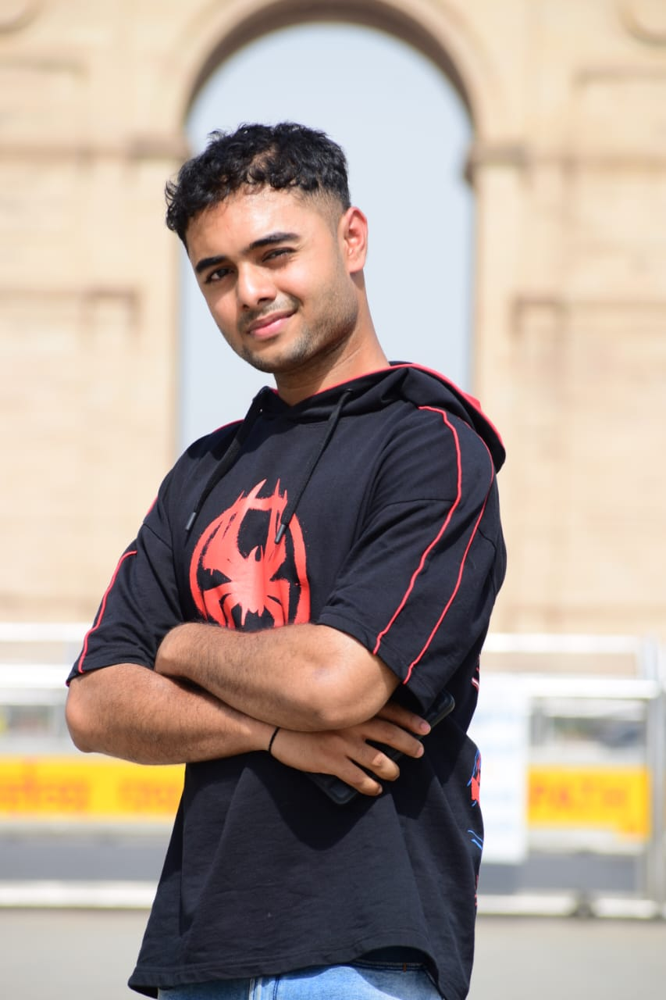

About Uzair Ahmed
Hello! My name is Uzair Ahmed, a B.A. (Hons) Mass Communication student from the 2022-2025 batch. I am a passionate front-end web developer and have built a dedicated notes website for MGKVP students. In addition to my development skills, I am a professional video editor and graphic designer. As an educator in web development, I aim to help others learn and grow in this field.
This website is designed to be a valuable resource, especially for journalism students, but also for students from all streams. Here, you can not only study but also explore job opportunities. Whether you're preparing for competitive exams like CAT, IIMC, UPSC, or simply seeking new learning tools, this platform has something for you. I like to think of it as the "Google" of education and job applications, particularly for students in Varanasi, especially those at MGKVP. However, it's open to all students from different colleges and schools, so feel free to explore and benefit from it!!!